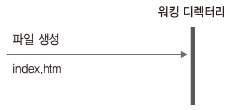
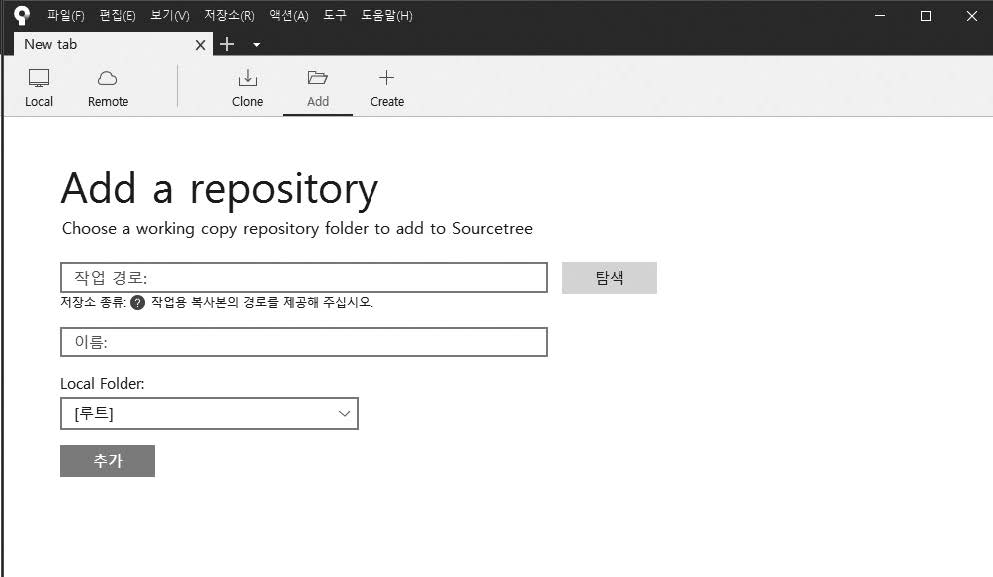

커밋을 직접 실습해 봅시다. 워킹 디렉터리에 새로운 파일을 하나 생성하여 커밋 과정을 따라가 보겠습니다.
실습을 위해 간단한 HTML 파일을 하나 작성합니다. 에디터를 이용하여 코드를 작성하면 됩니다. 필자는 VS Code를 이용하겠습니다.
$ mdkir gitstudy04 ☜ 새로운 실습 폴더를 생성합니다.
$ code index.htm ☜ VS Code를 사용해 파일을 작성합니다.
$ git init ☜ 저장소를 깃으로 초기화합니다.
Initialized empty Git repository in E:/gitstudy04/.git/
VS Code를 사용하여 파일 작성
infoh@hojin MINGW64 /e/gitstudy04 (master)
$ code index.htm ☜ VS Code 실행
index.htm은 다음과 같이 작성합니다.
<!DOCTYPE html>
<html>
<head>
<meta charset="utf-8" />
<meta name="viewport" content="width=device-width, initial-scale=1">
<title>Page Title</title>
</head>
<body>
</body>
</html>
작성한 예제 파일은 기본이 되는 HTML의 뼈대 페이지입니다. 파일 생성 과정을 그림으로 표현하면 다음과 같습니다.
그림 4-3] 파일 생성 과정

이렇게 파일을 생성하면 워킹 디렉터리에 index.htm 이름으로 저장됩니다. 모든 작업은 워킹 디렉터리 안에서 진행됩니다.
워킹 디렉터리에 새 파일이 생성되었습니다. 워킹 디렉터리에 새 파일이 추가되면 깃은 변화된 상태를 자동으로 감지합니다. 이때 깃 상태를 확인할 수 있는 명령어가 status입니다.
status 명령어를 입력하면 메시지가 출력되는 것을 볼 수 있습니다.
infoh@hojin MINGW64 /e/gitstudy04 (master)
$ git status ☜ 명령을 입력합니다.
On branch master
No commits yet
Untracked files:
(use "git add <file>..." to include in what will be committed)
index.htm ☜ 새로운 파일이 등록된 것을 확인
nothing added to commit but untracked files present (use "git add" to track)
깃의 상태 메시지에서 Untracked files 표시 부분을 확인합니다. 깃 배시 터미널로 실행하면 추적되지 않은 파일은 빨간색으로 표시합니다. Untracked files 메시지는 워킹 디렉터리에 새로운 파일이 등록되었다고 알려 주는 것입니다.
이렇게 깃은 워킹 디렉터리에 새 파일이 추가되면 상태를 감지하고 향후 이력을 추적할지 여부를 결정합니다.
Note: 모든 실습은 깃의 계정 및 환경 설정이 된 상태에서 진행합니다. 혹시 앞 장들을 읽지 않고 바로 4장을 시작했다면 앞 장들로 이동하여 계정과 환경 설정을 하세요.
소스트리를 사용하여 깃의 status 명령어와 동일한 상태를 확인할 수 있습니다. 소스트리를 실행합니다. 아직 gitstudy04 폴더와 소스트리를 연동하지 않았습니다. 새 탭에서 Add 버튼을 클릭합니다. 탐색을 눌러 깃 배시에서 만든 gitstudy04 폴더를 찾아 선택한 후 추가를 누릅니다.
그림 4-4] 소스트리에 저장소 추가

gitstudy04 저장소를 추가했다면 소스트리에서 왼쪽의 파일 상태 탭을 선택합니다.
그림 4-5] 소스트리에서 새 파일 감지

새로 작성한 index.htm 파일이 소스트리의 스테이지에 올라가지 않은 파일 목록에 추가된 것을 확인할 수 있습니다.
소스트리는 GUI로 상태를 직관적으로 표시해 줍니다. 사실 내부적으로는 소스트리가 status 명령어를 대신 깃에 입력하는 것입니다. 따라서 직접 status 명령어를 실행하지 않아도 쉽게 확인할 수 있습니다.